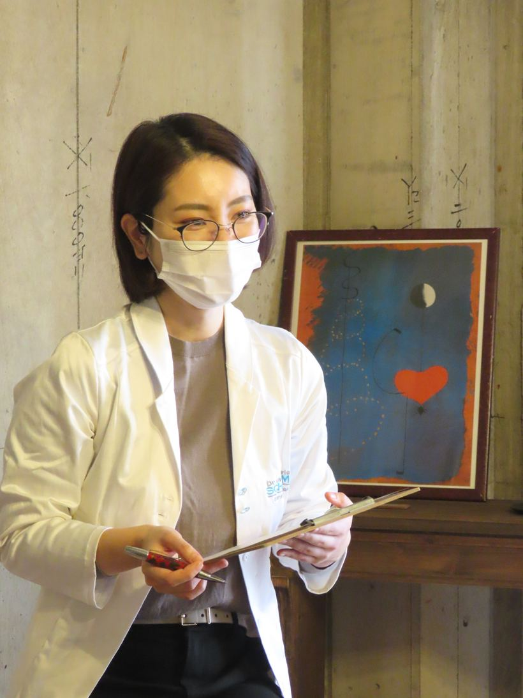

肌本来の力を、
引き出す。
「効果を実感できる」を、いちばん大切に。
Miroはさまざまな美容・リラクゼーションサービスを通してお客様が健やかに年齢を重ねるお手伝いをします。
CONCEPT
どこに行っても解決しなかった
肌悩みに、本気で向き合う
長年つき合ってきたニキビ、シミ、肝斑、ゆらぎ肌。「もう仕方ない」とあきらめていた悩みにこそ、Salon de Miro は向き合います。
看板メニューのグリーンピールは、天然ハーブ100%。肌の心臓部である真皮層まで有効成分を届け、乱れたターンオーバーを整えることで、肌が本来もっている再生力を呼び覚まします。
お一人おひとりの肌と暮らしにあわせて、じっくりお話をうかがってから。効果と心地よさの両方を大切にした、田町の完全予約制サロンです。
 天然ハーブ 100%
天然ハーブ 100%OWNER
肌の変化に、いちばん近くで

はじめまして。Salon de Miro オーナーの池元美佐子です。
私自身、長いあいだ自分の肌に悩んできました。だからこそ「どこに行っても解決しなかった悩みに、本気で向き合えるサロンを」という思いで、この小さな隠れ家をはじめました。
グリーンピールをはじめ、一つひとつの施術を、お一人おひとりの肌と暮らしにあわせて。カウンセリングの時間を何より大切にしています。あなたの「なりたい肌」まで、いちばん近くで寄り添わせてください。
WHY MIRO
ミロが選ばれる、3つの理由
効果を、実感できる
ニキビ・シミ・肝斑・エイジング。長年あきらめていた悩みに「変わった」を感じた、というお声を多くいただいています。
専門技術で、安全に効果的に
グリーンピール、シミケア、エイジングケア。それぞれの肌悩みに、確かな知識と技術でアプローチします。
じっくり聞くカウンセリング
まずはお話をしっかりと。肌の状態も暮らしのリズムもうかがったうえで、いまのあなたに最適なケアをご提案します。


VOICE
お客様からのお声
グリーンピール55secを受け始めてからニキビ跡やシミが薄くなり、ニキビの数も減ってきました。新たにできてもすぐ枯れていくので、毎回ハーブの力に感動しています。長年悩んでいましたが、ミロさんに出会えて本当に良かったです。
両頬に大きな肝斑があり長年の悩みでしたが、グリーンピールを続けたら薄めのファンデーションで隠れる薄さに。いろいろ試してきましたが、これだけ薄くなったのはグリーンピールだけでした。
ACCESS & BOOKING
店舗情報・ご予約
- 住所
- 岡山県岡山市北区田町1丁目6-15
田町ハイツ 203号 - 電話
- 080-9130-3765
- メール
- salondemiro@gmail.com
ご予約 完全予約制